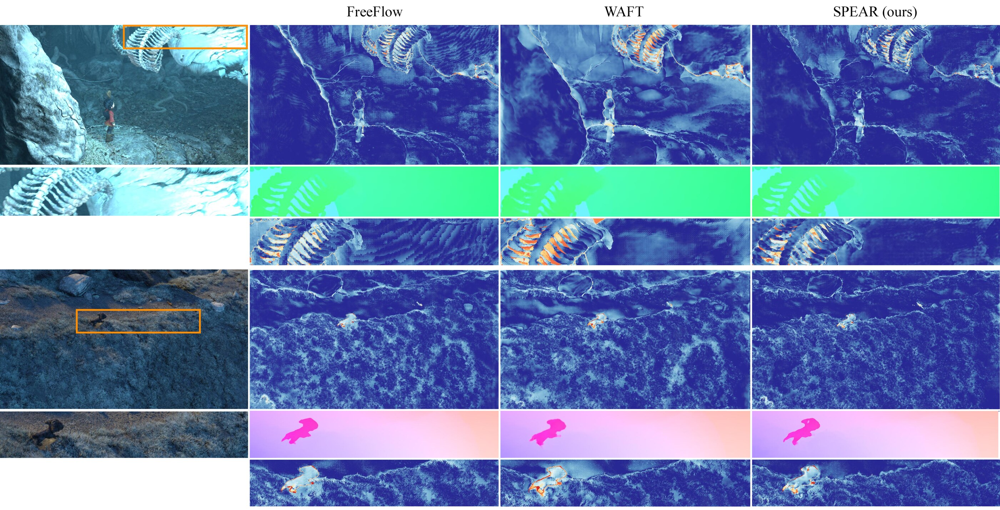
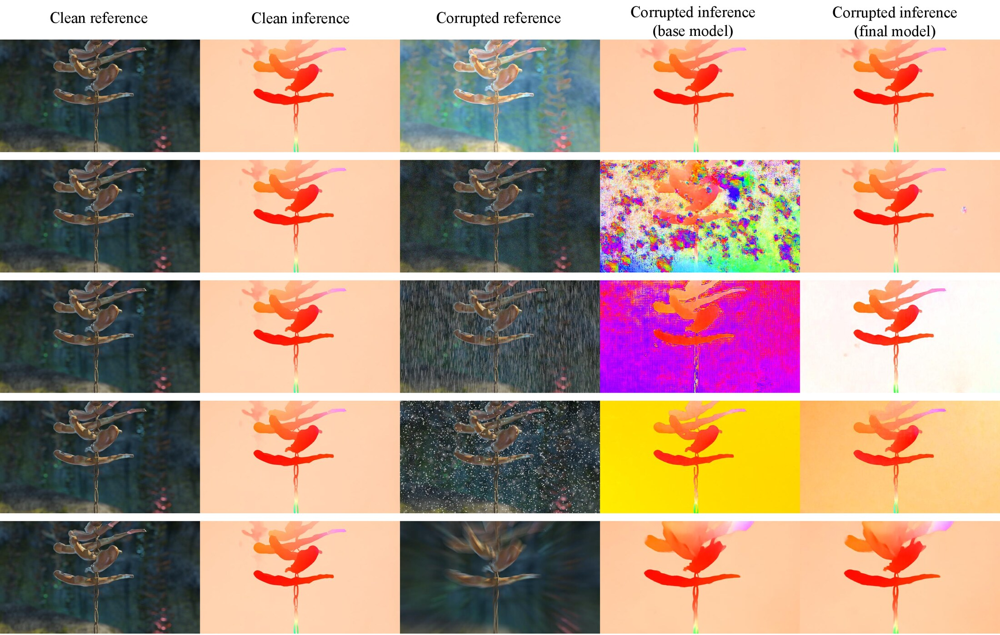

Abstract
We present SPEAR (Staged Pre-training and Expert Adapter Routing), a staged learning framework for generalizable optical flow that remains accurate across diverse visual conditions, from clean images to severely corrupted observations. In the first stage, staged pre-training transfers the representations of a large, frozen foundation encoder (Depth Anything V2-Large) into a WAFT-style flow network, progressing from TartanAir through FlyingThings3D to Spring at native resolution. In the second stage, the pre-trained flow network is kept frozen and robustness is acquired through lightweight expert adapters. A token router built on the same frozen encoder tokens decides which corruption-specific expert to activate, and a three-frame extension adds temporal context. Because every adapter is zero-initialized and the router keeps its gates closed on clean input, robustness is gained without sacrificing clean accuracy.
Method
Staged pre-training
The Depth Anything V2 encoder stays frozen throughout. On TartanAir and FlyingThings3D, only the modules that connect the large encoder to the WAFT update operator are trained, so the new features align with an existing motion prior. On Spring, all non-encoder parameters are fine-tuned at native 1080×1920 resolution.
- Phase 1TartanAir pre-training
- Phase 2FlyingThings3D training
- Phase 3Spring training for the clean domain
Expert adapter routing
The flow network is frozen. A router reads the frozen encoder tokens of three frames and opens one gate per corruption group (frost, other weather, compression-type). Gated expert adapters correct the features, and gated temporal adapters exploit the third frame. A clean pass penalizes any regression against the frozen two-frame model.
- Phase 4Spring training for the router
- Phase 5Spring training for the adapters
Frozen foundation encoder
One set of DAv2-L tokens feeds both the flow branch and the router.
Routing without a new backbone
The router is a small head on existing tokens, not a separate classifier network.
Zero-initialized experts
Training starts from the clean model exactly; gates stay closed on clean input.
Three-frame context
Temporal adapters fuse t−1, t and t+1 when single frames are degraded.
Clean Accuracy

Robustness

Evaluated on the Spring optical flow benchmark and the corrupted RobustSpring test set of the RoCo challenge.